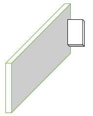

ğŸ“Diseño y maquetación de la silla de ruedas
1.      Tomamos en la parte inferior los dos motores con las ruedas de transporte en una tabla de 20x14 cm. Para colocar las ruedas de transporte se deben atornillar con los tornillos 8x1/1 punta fina.
2.      Tomamos las dos tablas de 19,5x10 y realizamos cortes circulares para que se acoplen con las llantas Arduino.
3.      Procedemos a realizar cortes rectangulares en una de las tablas 19,5x10.
4.      Con ayuda de los tornillos de ½ pulgada martillamos las tablas de 19,5x10 y una tabla de 14x10 en los lados de la tabla de 20x14 para formar un rectángulo.
5.      Pegamos con silicona las placas Arduino, puente H, el módulo MP3, y el interruptor dentro de las de las tablas.

6.      Procedemos a diseñar los reposabrazos de la silla y cortarlos.
    Â
8.   Tomamos la tabla de 17x14 cm y martillamos la tabla de 5x2 cm en la parte inferior.

7.      Realizado el paso anterior la clavamos en la tabla de 20x14 cm sobrante y realizamos una abertura pequeña en medio de la tabla..
8.      Con la ayuda del cartón cartulina formamos la siguiente figura ya la recortamos con una tijera dejando una abertura al frente y otra debajo de la figura para colocar el parlante con los cables teniendo encuentra pasarlos por la pequeña abertura realizada en el centro de la tabla y pegarlo sobre las tablas ya martillas anteriormente.
       Â
9.      Por último, martillamos los reposa brazos para completar la construcción de la silla de ruedas.